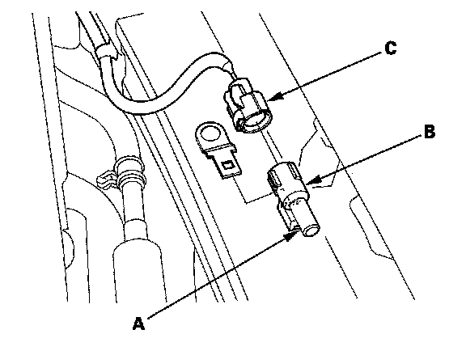

Ambient Temperature Sensor / Switch HVAC: Service and Repair
Outside Air Temperature Sensor Replacement1. Remove the bulkhead cover.

2. Lift the tab (A) to release the lock, then remove the outside air temperature sensor (B) from the back of the front bumper. Disconnect the 2P connector (C) from the outside air temperature sensor.
3. Install the sensor in the reverse order of removal.